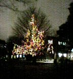
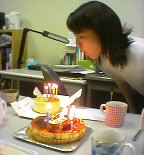
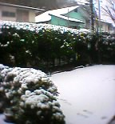

------------------
Photo Diary 2002.12
------------------
> Curry and Rice... カフェテラス本郷の別名「洗面器カレー」、なぜか挑むことになり、えー、すみません、８０％くらいでなんかルーがねケチャップに思えてきてギブアプ、。
> その後、一日半くらいなーんも食いたくなりませんでした、。
DATE: 02-12-17 14:25
PLACE: 東京都文京区

> Christmas Tree... 東大農学部、冬の名物。ちなみにイチョウの樹（メス）、秋は銀杏だらけで近寄り難し。
DATE: 02-12-16 21:01
PLACE: 東京都文京区
> Cup Noodle, La Ou... 日清ラ王「みそ」に、ローソンおでんは玉子と野菜がんもどきをトッピングでどうだ！
> 腹減り時に、都内ランチのうまい店紹介サイト（写真付き）とか見るのはジサツ行為と知った。顛末が左の写真。
DATE: 02-12-14 21:07
PLACE: 東京都文京区

> Birthday Girl, Again... ゾロ目だしねぇ、覚えやすいな。ちなみに、ちょうど２年前は大江戸線の開通だったそう。なのに、まだ２，３回しか乗ったことない気がする、、。
DATE: 02-12-12 16:40
PLACE: 東京都文京区

> Garden Snow... ぐるり見渡せば宙にいっぱいの雪片が。姿を得た山腹の樹木が。雪の日を唄うです。
> ときに、滑りの悪くなった鍵穴には、鉛筆の黒鉛なすりつけたカギでガチャガチャやると、いいらしいぞ。
DATE: 02-12-09 08:23
PLACE: 神奈川県逗子市
> A Single Room 1111... 角の部屋で２面窓有り、見晴らしも良く、すがすがしいけど、よく冷えもする、。
> 出会い別れは私の性分で、ひょっとするとこれで今生の、と思ってみても、振り返るでもなく足は前に進むが、過ぎた時間の穏やかさが違和感を呼ぶのを、黙らせるのにちょっと空を仰いだり、しなきゃならなかったりはするよ。
DATE: 02-12-05 07:58
PLACE: 京都府下京区
Back